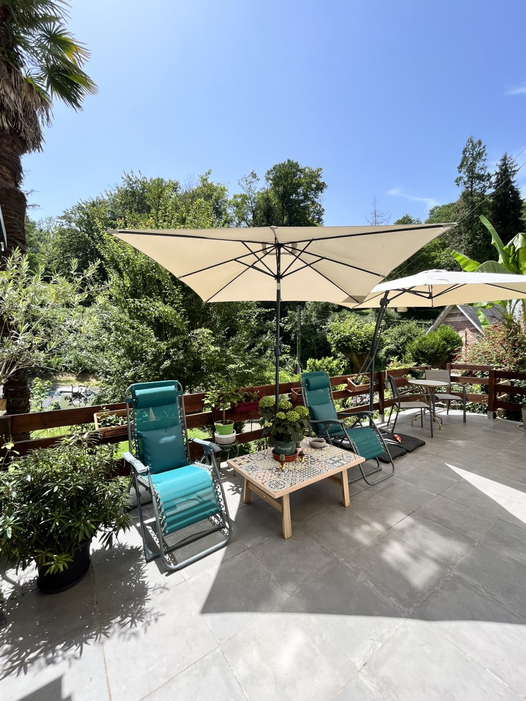
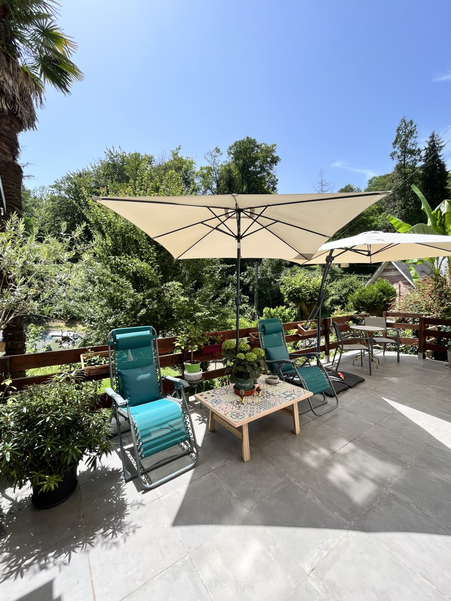

Vi offriamo 6 appartamenti bilocali completamente attrezzati, situati accanto a un bar/negozio di alimentari, a soli 400 metri dalle Terme (con una fermata della navetta termale gratuita proprio di fronte). Potrete inoltre usufruire di un giardino privato e delle nostre terrazze.
Posizione eccellente vicino alle attrazioni e ai luoghi più belli.
Venite a scoprire. Il nostro team √® a vostra disposizione ü´∂
Scoprite i nostri appartamentiNel giardino della Villa Julia regna un’atmosfera di calma e intimità, offrendo una splendida vista sul parco di Capvern-les-Bains.
Immersi nel verde, potrete rilassarvi, ricaricare le energie e sentirvi in armonia con la natura.
Ci prendiamo cura delle nostre piante con amore per creare un ambiente piacevole per i nostri ospiti.
 
Le nostre terrazze hanno un fascino particolare!
Se vi svegliate presto al mattino, potete preparare una tazza di caffè aromatico, uscire sulla terrazza e godervi il momento ascoltando il canto degli uccelli!
Cos’altro serve per essere felici?
L’acqua termale unica di Capvern, naturalmente pura e rinomata per le sue proprietà terapeutiche, ha reso la località la "capitale del rene".
Tutto è pensato per la vostra salute:
E un’atmosfera festosa accompagnata da varie animazioni durante tutto il vostro soggiorno.
Avete domande o bisogno di consigli? Il team della Villa Julia sarà lieto di rispondere rapidamente e di fornirvi tutte le informazioni necessarie per preparare il vostro soggiorno a Capvern.
Animali domestici: gli animali domestici sono ammessi su richiesta.
Metodi di pagamento accettati: carte di credito (Visa, Mastercard), contanti e assegni.
Per i bambini: forniamo gratuitamente (su richiesta) una culla, un seggiolone, una vaschetta da bagno.
Arrivo: dalle 15:00 alle 19:00, Partenza: entro le 11:00. Arrivi/partenze fuori orario su richiesta.
Grazie per l’interesse dimostrato per Villa Julia. Scegliete una delle opzioni qui sotto.